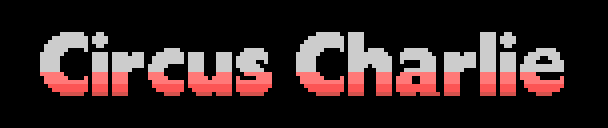
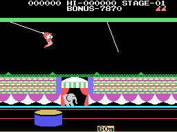
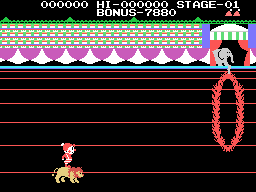
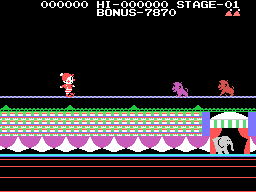
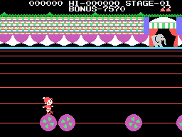
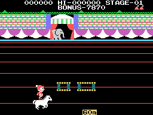
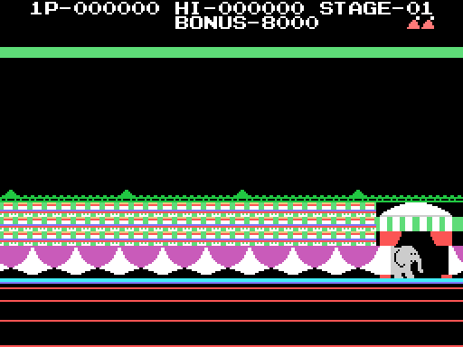
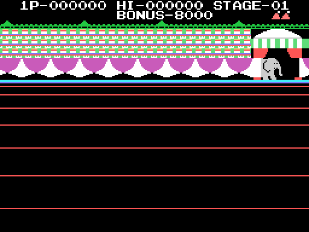

El juego

Charlie, el payaso, tiene que cruzar la pista en cinco números de circo. Cada número es un tipo de fase, el byte (0xE052), y el cartucho reparte por él todo lo que cambia: el decorado, el arranque, los móviles y el cuadro. Se empieza por el león, medido corriendo el cartucho sin forzar nada.
Las cinco imágenes de abajo no son capturas: son el cartucho ejecutándose en tools/corre_circus.py. Cotejadas contra openMSX en los mismos instantes, dan cero bytes de VRAM distintos.
0 · El trapecio
Charlie salta de un trapecio a otro, con la cama elástica abajo. Los dos trapecios se balancean cada uno a su ritmo: cuatro bytes de ritmo puestos a mano en 0x6161 y una sola tabla de duraciones, 0x5F61, para los dos. Es el cuadro más cargado del cartucho: seis llamadas en 0x4CC2.

1 · El león
Charlie monta el león y salta los aros de fuego. Charlie son cuatro sprites, y aquí la misma rutina, 0x5087, añade tres más para el león; por eso la tabla de poses de este número (0x5116) gasta siete bytes por pose y la de los demás cuatro. Los aros son cuatro móviles que arrancan en la fila 0x48, y el aro está pintado con tiles del fondo, no con sprites.

2 · La cuerda floja
Por la cuerda vienen los monos. El que va suelto vive en 0xE1B0 y entra por (0xD0, 0x50).

3 · Las bolas
Charlie en equilibrio sobre una bola y las demás rodando hacia él: son los recogibles de 0xE170.

4 · El caballo
Charlie a caballo, con lo que hay que saltar llegando por un guion propio (0x5C8E). El caballo son tres sprites, con un paso que cambia cada cuatro cuadros (0x50D8).

El BONUS
Arranca en 8000, en BCD (0x42F8), y baja cada ocho cuadros.
Los cinco decorados
Tal como quedan al acabar el montaje, antes de que el juego ponga a nadie en pista. Salen de la cadena de 0x5FD6, reescrita en tools/graficos.py, y están cotejados contra openMSX en 0x4C3C: cero bytes.



